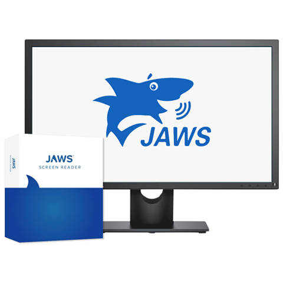

Descubre nuestros productos
Productos diseñados para personas con discapacidad visual, mejorando su accesibilidad y autonomía
Libro en Braille
Ver detalles
Balón de fútbol Medino con sonido
Ver detalles
Balón de fútbol Blue Flame
Ver detalles
Goalball oficial de goma azul
Ver detalles
Goalball Junior para categorías juveniles
Ver detalles
Máscara deportiva Justa Blind profesional
Ver detalles
Bastón plegable Ambutech Graphite de 5 secciones - Punta de gancho malvavisco
Ver detalles
Bastón plegable de aluminio EUROPA - 4 secciones
Ver detalles
Bastón Punta de bola rodante Ambutech - Estilo deslizante - Blanco
Ver detalles
Big Track Plus
Ver detalles
Etiquetas de letra grande para teclados de computadora
Ver detalles
Etiquetas de letra grande para teclados de portátiles - Negro sobre amarillo
Ver detalles
Teclado con cable y teclas amarillas de letra grande con reposamuñecas
Ver detalles
Teclado NERO Slimline en letra grande, negro sobre amarillo
Ver detalles
Teclado Slimline de color amarillo sobre negro plateado con letra grande
Ver detalles
Teclado XLSee con letra grande - Negro sobre amarillo
Ver detallesTOPAZ EZ HD - Lupa de vídeo de alta definición
Ver detallesTOPAZ OCR - Amplificador de vídeo con reconocimiento óptico de caracteres
Ver detalles
TOPAZ XL HD - Lupa de vídeo de escritorio de alta definición
Ver detalles
ZoomText Magnifier/Reader - Software de ampliación y lectura
Ver detallesFocus 14 Azul 5ª generación - Pantalla braille compacta y portátil
Ver detalles
Focus 40 Azul 5ª generación - Pantalla braille ligera y duradera
Ver detallesFocus 80 Azul 5ª generación - Pantalla braille robusta y avanzada
Ver detalles
Fusion
Ver detalles

JAWS® - Job Access With Speech
Ver detalles
Duplicadora Brailon EZ-Form
Ver detalles
Horno Fuser - Tecnología para producción de diagramas táctiles
Ver detalles